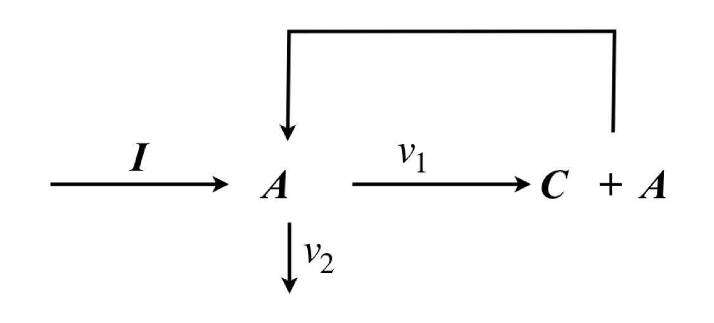
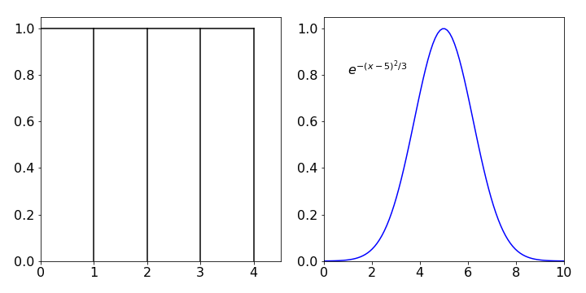
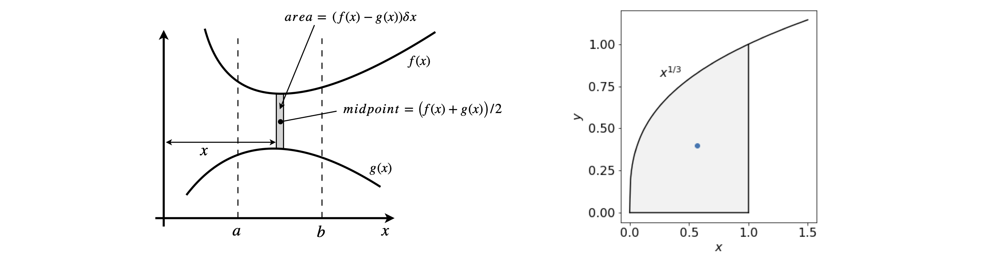
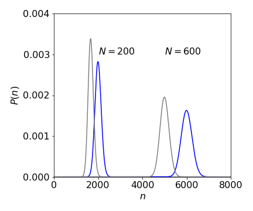

8 Calculating an Average.
Contents
8 Calculating an Average.#
# import all python add-ons etc that will be needed later on
%matplotlib inline
import numpy as np
import matplotlib.pyplot as plt
from sympy import *
init_printing() # allows printing of SymPy results in typeset maths format
plt.rcParams.update({'font.size': 16}) # set font size for plots
8 Average value.#
You will be familiar with obtaining the average of a set of numbers obtained in an experiment by adding them all together and dividing by their number. The average value from some theoretical expression, for example, the energy of molecules, may be an important quantity with which to compare with an experimental measurement and therefore a general way of calculating averages is required. To do this, the probability distribution P of the quantity must be known.
8.1 The average as a summation#
Suppose the numbers \(q = 10,\, 13.5,\, 14, \,16.2\) have been measured, then their average is clearly \(\langle q \rangle = (10 + 13.5 + 14 + 16.2)/4 = 53.7/4\). It has been implicitly assumed that each number is equally likely to have been measured, which is the familiar case because experiments are usually arranged in this way making them easier to do. It is not always true, however, that each value is equally probable, there is often a distribution of values that has to be taken into account, the Boltzmann distribution of energies or the degeneracy of rotational energy levels, for example.
Replacing the numerical example above with a formula makes the calculation appear much more complicated when it is in fact just the same,
In this equation the probability of observing the \(i^{th}\) observation of \(q\) is \(P(q_i)\) and if \(P(q_i) = 1\) then each measurement has an equal chance of occurring, which is 1, and the probability distribution is uniform or flat. If there are four measurements, then \(N = 4\). Figure 16 shows two probability distributions. On the left is the uniform distribution, on the right a Gaussian one.
To use equation 25, multiply each value \(q_i\) by the chance of observing it, which is \(P(q_i)\), and then sum all the values together. The denominator tells us to add together all the probabilities. If the distribution is normalized this sum will be 1. Using the values for the numbers and \(P\), then the average, or mean value of \(q\) is
The average of \(q^2\) can also be calculated using the related formula
The reason for wanting this quantity is that it is needed to calculate the variance of the numbers. The variance \(\sigma^2\) is a measure of the spread about the mean value. This spread is generally called the dispersion and often has a Gaussian or bell-shaped distribution. The variance of a set of numbers is defined as
where \(\mu\) is the population mean, see chapter 13. The standard deviation, the square root of the variance, is also used as a measure of dispersion and with this particular set of numbers \(\sigma = 2.22\).
If the numbers q represent energy \(E\) then its standard deviation is \(\sigma_E =\sqrt{\langle E^2\rangle -\langle E\rangle^2}\). When analysing sets of data, the average value of a set of repeated measurements is reported with the standard deviation. The result is quoted as a mean value\(\mu\pm\sigma\). By blind chance, 68% of observations are to be expected to fall in the range \(\mu+\sigma \to \mu-\sigma\) and clearly 32% outside this range. Chapter 13 describes this in more detail.
To calculate the average of higher powers of \(q\), the \(n^{th}\), for example, use
(i) Invert sugar#
When a solution of table sugar (sucrose) is heated it hydrolyzes to glucose(dextrose) and fructose and is catalysed by acid. The reaction can be easily followed by observing the rotation of plane polarised light with a polarimeter. The reaction is
The specific rotations\(^*\) are \([\alpha]_s=+66.5, [\alpha]_g=+52.7,[\alpha]_f=-92.0\) degrees respectively. When the average specific rotation passes through zero the sugar is said to be ‘inverted’.
The average specific rotation is
where \(z\) is the mole fraction.
Using this equation the inversion point can be calculated. Let \(x_0\) moles of sucrose be initially present then \(x_0-x\) reacts and \(x\) moles each of glucose and fructose are produced making the total \(x_0+x\) moles. The specific rotation at a time when \(x\) has reacted is
and when \([\alpha]=0\) the solution is ‘inverted’ and the extent of reaction \(\displaystyle \frac{x}{x_0}=\frac{[\alpha]_s}{[\alpha]_s-[\alpha]_g-[\alpha]_f}=0.629\) so that inversion occurs when \(\approx 63\)% of sucrose has been converted.
\(^*\) The specific rotation \([\alpha ]_{\lambda }^{T}\) is defined as the optical rotation \(\alpha\) at a path length \(L\) of \(1\) dm, a concentration \([C]= 1\;\mathrm{g/100\,mL}\), at temperature \(T\) (typically \(20^{\text{o}}\)C) and at wavelength \(\lambda\), usually the sodium D line at \(589.3\) nm.
(ii) Chain reactions. Mean Chain length#
In a chain reaction, in contrast to a ‘normal’ reaction, one of the products is the same species as a reactant, or can react in an equivalent way, and so the reaction propagates. Polymer formation and may gas phase reactions such as \(\mathrm{O_2 + H_2}\) are chain reactions. In gas phase reactions radical species, such as \(\mathrm{H\cdot,\, OH\cdot}\), are usually the chain carriers.
The general scheme is shown in fig 17c. Species I is the initiator step, for example a thermal reaction that generates active molecules, A and C a product. As can be seen the species A is reformed and cycles around the reaction.

figure 16a: Semenov’s scheme for a simple chain reaction.
The probability of propagation is defined as that fraction of A which is used again \(\displaystyle \alpha =\frac{v_1}{v_1+v_2}\) where \(v_1,\,v_2\) are effective first order rate constants with \(v_2\) forming any species that undergoes no further reaction. The rate of reaction is
and A reacts as
In the stationary phase of the reaction (steady state), then \(\displaystyle d[A]/dt = 0\) then defining the chain length as \(v=W/I\) then \(\displaystyle v=\frac{\alpha }{1-\alpha}\).
If the chain has \(s\) links then it must have propagated with chance \(\alpha,\; s\) times and not propagated with chance \((1-\alpha)\) once. Thus the probability of \(s\) links in a chain is \(p_s=\alpha^s(1-\alpha)\).
The average chain length is therefore
Both the summation are standard ones since \(|\alpha|<1\), because it is a fraction, then
and thus the average number of units in a chain is the same as the values calculated assuming steady state applies.
Short chains are the most probable as may be seen by examining \(P_s=\alpha^s(1-\alpha)\) vs \(s\) at various \(\alpha\) values recalling that \(0\lt \alpha \lt 1\). Plotting the normalised probability \((\alpha^s)\) shows that this is a maximum at \(s=0\) and decreases uniformly as \(s\) increases.
(iii) Average of averages#
In the situation where some averages are given and the combined value is needed then a weighting of each is required. In the simplest case of two averages with numbers \(n\), \(a\) and \(m\) number \(b\)
their average or average of averages, is
The average of the whole group taken as one is
and this is clearly not the same when \(n\ne m\).
Suppose that there are instead many averages of groups of number \(n_1,n_2,n_3\) with an average value of \(v_1,v_2,v_3\) respectively, the correct average is then ‘weighted’ by the amount each group contributes, for example
or
which has the form of equation 25 but here the \(v\)’s are themselves averages.
8.2 The average as an integration#
The average quantity derived from a theoretical model of a chemical or physical process, and described by an equation, is always used to compare with the experimental value from a set of measurements. Rather than a set of numbers, a calculation similar to that described above is needed to calculate the theoretical average. However, if the function is continuous, then integration rather than summation must be used.
Suppose that \(x\) is the quantity whose average is \(\langle x\rangle\), then this is calculated as
where \(P(x)dx\) is the probability distribution of \(x\) and is the equation that describes how \(x\) is distributed and, colloquially speaking, \(P(x)\) is its shape. In equation 28 the denominator is the normalization term but if the distribution is already normalized then \(\int P(x)dx = 1\) and there is no need to calculate this integral.
The limits of the integration cover the whole range of the distribution, usually \(0 \to \infty\), or \(-\infty \to \infty\) but may be \(0 \to 2\pi\) or \(0 \to \pi\) if the calculation involves angular values, however, the integration limits used depend upon the particular problem.

Figure 16b. left: A constant or uniform distribution. Right: A Gaussian distribution. These distributions are not normalised as their area is not unity.
(i) Excited states#
It is observed experimentally that the electronically excited state of a molecule decays exponentially, which means that there is an exponential distribution of times during which the molecule remains excited. Radioactive decay also has this type of distribution. One question to ask is; what is the average time that the molecule remains excited? To answer this question, equation 28 is used with the quantity \(x\) = time and the distribution function is
which is the chance the molecule has of still being excited during a time interval \(dt\) from \(t \to t + dt\), if \(\tau\) is its lifetime, and it was already excited at time \(t\). The lifetime is defined as the time an ensemble of the excited molecules take to decay to \(1/e\), or \(\approx 37 \text{%}\) of their initial number. The reciprocal of the lifetime is the rate constant. The half-life is the time taken to halve an initial population but half-lives are nowadays rarely used except for radioactive species. Using equation 28,
Note that the integration limits start at \(t = 0\) and extend to infinity. Both integrals are ones met before, and can be found using Section 2.13,
and their ratio produces \(\langle t\rangle = \tau\) so that the average decay time is also the lifetime. Note that in this case the probability distribution is not normalized because the integral \(\int P(t) = \tau\) and not 1. Because it is often not known beforehand if a distribution is normalized, this is ensured in the calculation by dividing by \(\int P(t)\) as in equation 28.
In the case of a difficult integral a useful ‘trick’ is to take the log of the integral and then differentiate the result, i.e. if there is a function that depends on \(\alpha\) and \(x\), i.e. \(f(\alpha,x)\) then
In this example \(\alpha = 1/\tau\) and \(x=t\) thus the integral is \(\int_0^\infty e^{-t\tau}dt = \tau\). Then \(\displaystyle \frac{d}{d(1/\tau)}\ln(\tau)=\tau\) which is the same result as direct integration. Note that the differentiation is wrt. \(\alpha\) but in this case \(\alpha =1/\tau\) so differentiation is in \(1/\tau\). In the calculation we used a relationship of the type \(\displaystyle \frac{d\ln(y)}{dx}=\frac{1}{y}\frac{dy}{dx}\).
(ii) Infection period#
This example is that of calculating the mean time that a person is infected with a disease. Suppose that you are infected at time \(t\), and that the chance that you are no longer infected in the next small time interval \(\delta t\), is \(a\delta t\), where \(a\) is a constant depending on the type of disease. This is the rate constant with which the disease will die out. If \(p(t)\) is the chance that you were infected at time \(t\), during the time \(t + \delta t\) this changes to \(p(t + \delta t) = p(t)(1 - a\delta t) + O(\delta t^2)\), which is the chance of being infected at time \(t\) multiplied by the chance of remaining infected during the following time \(\delta t\). The term \(O(\delta t^2)\) means that terms in \(\delta t^2\) and higher are ignored because they are so small (see Chapter 5 for ‘big O’ notation). Subtracting \(p(t)\) from both sides and dividing by \(\delta t\) gives
Forming the differential with the limit \(\delta t \to 0\) gives
As only one individual was considered \(p(0) = 1\), and when integrated, by separating variables, \(p(t) = e^{-at}\). If \(N\) individuals were initially infected then \(p(t) = Ne^{-at}\). The average or mean time of infected is therefore by 29,
A related type of argument is followed to find the mean free path of gas molecules or atoms, but with the distance between collisions taking the place of time.
(iii) Centroids#
In this example we find the position \(\langle s\rangle\) of the centre of gravity or mass of a body that has a weight distribution \(w(s)\). The weight distribution describes how the mass resides in the object and therefore describes both its shape and how the mass varies across that shape. In general, there are three values of the centre of mass, one in each of the x-, y-, and z-axes, so it is necessary to specify which one is being considered. The centre of gravity is the average position according to its mass and therefore, for each axis, the appropriate equation to use has the form of equation 28,
and \(s\) can represent any one of the x-, y- or z-coordinates but for simplicity, we will consider only two-dimensional shapes and uniform density. If the body has uniform density the coordinates of the centre of mass is often called the centroid. The integral\(\int sw(s)ds\) is the moment \(M_s\) about an axis \(s\) and \(\int w(s) ds\) the area \(A\). If the density is not uniform, then the function \(w(s)\) has to be multiplied by the density at \(s\).
Consider calculating the centroids of an area in the x-y plane, Figure 17. The method is to calculate the moment of a strip about each of the x- and y-axes in turn then divide the result by the total area of the object. In this case this is bounded above and below by functions \(f\) and \(g\) and by \(a\) and \(b\) along the x-axis. This area is called a lamina if it is of uniform density. The area is shown shaded in Figure 17.
The small element between the two curves has an area \(( f(x) - g(x))\delta x\) and when multiplied by the density this would be its mass. The centre of gravity, or mean value of the strip, is at \(y\) value of \((f (x) + g(x))/2\) and the moment of the strip about the x-axis is the product of these two terms.
Taking the limit to form a true differential, makes the change \(\delta x \to 0\) and then \(d M_x /dx\) is formed which when integrated to cover the whole area from \(a \to b\) gives the moment about the x-axis as
In the special case that the lower curve is the x-axis, then the function \(g(x) =0\) and
The similar calculation about the y-axis produces the moment
which produces
and when \(g\) is the x-axis,
The area \(\displaystyle A=\int_a^bf(x)-g(x)dx \) and the centroids are therefore
Notice how the \(y\) centroid depends on \(M_x\) and vice versa.

Figure 17. Left. Geometry for calculating centroids. Right centroid at \((2/5,4/7)\) (blue dot) of \(x^{1/3}\) with range \(0 \to 1\).
The centroid of the curve \(y = x^{1/3}\) from \(0 \to 1\) is obtained by first finding the area, which is the integral \(\displaystyle A=\int_0^1x^{1/3}dx=\frac{3}{4}x^{4/3}\bigg|_0^1 =\frac{3}{4}\).
The moment about the x-axis is \(\displaystyle M_x =\frac{1}{2}\int_0^1 x^{2/3}dx=\frac{3}{10}\) and the centroid is at \(\langle y\rangle = M_x/A = 2/5\).
The moment about the y-axis is \(\displaystyle M_y =\frac{1}{2}\int_0^1 x^{4/3}dx=\frac{3}{7}\) and the centroid is at \(\langle x\rangle =M_y/A=4/7\)
(iv) Chromatography. Average value and width of eluted profile#
In chapter 1 section 9.10 a probabilistic model was developed to describe the shape of a chromatogram the result was a distribution \(P(n)\) closely related to the Poisson distribution was found,
where \(N\) is the number of theoretical plates, \(p\) the probability related to the partition constant \(K\) the total volume of the mobile phase \(V_m\) and of \(V_s\) the stationary phase;
Initially \(m_0\) moles are added and are distributed in the mobile and stationary phase as \(p:(1-p)\). The variable \(n\) is the number of steps takes as the molecules move down the column and at each step \(V_m/N\) moles are elute.
The average of the resulting distribution is \(\sum_{n=0}^\infty nP(n)\) which assuming that the sum can be replaced by an integral becomes \(\langle n\rangle=\int nP(n)dn\) and with some simplification
which needs the substitution \(x=np\), or \(dx=pdn\) forms
This is clearly a complicated integral and after some searching (or by using Python/Sympy) one finds that it is a standard integral which produces the gamma function, therefore \(\displaystyle \langle n\rangle = \frac{\Gamma(N+1)}{p(N-1)!}\). Since \(\Gamma(N+1)=N!\), for integer \(N\), which is the case here then
The average eluted volume is therefore \( V_m /p\) because \(N/p\) volumes each of \(V_m/N\) are eluted. This quantity is not the maximum of the peak, because this profile is not symmetric, but is close to that value. Differentiating \(P(n)\) and setting the result to zero will find the peak at \(n=(N-1)/p\).
The average value is sometimes called the first moment and the second moment is is used to calculate the variance of a quantity. In this case we use this to find the width of the distribution which is \(\sigma_n\) where \(\sigma_n^2= \langle n^2\rangle - \langle n\rangle^2\).
The integral needed is \(\langle n^2\rangle=\int n^2P(n)dn\)
and the integral is \(\Gamma(N+2)\) and substituting and simplifying gives
the width of the peak is given by \(\sigma_n\) where
This squared value only in terms of the number of steps \(n\) and we as measure the eluted volume this number should be multiplied by \( (V_m/N)^2\) and so the average width of the measured peak is
and similarly the mean volume becomes \(\displaystyle \langle V_m\rangle=\langle n\rangle\frac{V_m}{N}=\frac{V_m}{p}\) and \(\displaystyle \sigma=\frac{\langle V_m\rangle}{\sqrt{N}} \).
If the probability \(P(n)\) (eqn 35a) is plotted vs the number \(n\) this is proportional to plotting size of detected signal vs eluted volume because \(P(n)\) is the probability of eluting the \(n^{th}\) amount \(V_m/N\). As the number of plates \(N\) increases the peak occurs at larger \(N\) values at a given \(p\). If \(p\) is increased then the peaks occur at smaller \(n\). However, as \(n\) increases the with of the profile gets larger but only as \(\sqrt{N}\) but so does the separation but in proportion to \(N\) so that the separation improves, i.e. peaks that would overlap at small \(N\) may no longer do so, see figure 17a.

Figure 17a. Chromatography peaks with \(p=0.1\) left (grey) and \(0.12\) (blue) at two values of theoretical plates \(N\). Notice that as \(N\) increases so does the width of the peak but only as \(\sqrt{N}\) whereas the peaks separate as \(N\) so resolution increases with increasing \(N\) which can be obtained using longer columns.
8.3 Average of a function#
The average of a function of \(x,\; f (x)\), is evaluated in a similar way as for a variable
If the function is \(f(x)=e^{-\alpha x}\) and is distributed according to \(P(x)=1/\cosh(\alpha x)\) its average is
which looks rather complicated. However, \(\cosh\), like many trig functions, can be represented in an exponential form as \(2\cosh(x) = e^x + e^{-x}\) and this makes this normalization (denominator) integral simpler;
Trying a substitution \(u = e^{\alpha x}\) , then \(du = \alpha e^{\alpha x}dx = \alpha udx\) and changing the limits produces the result \(\displaystyle \frac{2}{\alpha}\tan^{-1}(u)\bigg|_1^\infty =\frac{\pi}{2\alpha}\)
The numerator is \(\displaystyle \int_0^\infty \frac{e^{-\alpha x}}{\cosh(\alpha x)}dx= \int_0^\infty \frac{2}{e^{2\alpha x}+1}dx\). Making a similar substitution let \(u=e^{2\alpha x}\), and changing the limits,
making the average \(\langle f(x)\rangle =2\ln(2)/\pi\)
8.4 Expectation values#
In quantum mechanics, if \(\psi\) are the normalized wavefunctions and \(x\), for example, is the displacement of an atom in a vibrating diatomic molecule from its equilibrium value, then its average position is in state \(k\)
Expressions of this form are called the expectation value of the operator, which is \(x\) in this case. The wavefunctions also depend on position \(x\) although this is not explicitly shown. The subscript \(k\) tells us that we are examining level \(k\); the superscript * shows that this is the complex conjugate of the wavefunction. The \(\langle\;\rangle\) around the \(x\) indicates an average value. Alternatively an average can be written with a bar as \(\bar x\). To the right of the equation the compact and much clearer bra-ket, or Dirac, notation is used, which uses only the indices of the wavefunction; see Chapter 8. Formally, in equation 37, \(x\) is the operator and it is always placed between the two wavefunctions. In this particular instance it does not make any difference where \(x\) is, but if the operator was \(d/dx\) then this has to be followed by something to operate on and this is always \(\psi\) and is preceded by \(\psi^*\) the complex conjugate.
Suppose that you are in the teaching lab and are asked to devise an experiment that attempts to measure \(\langle x\rangle\) for a harmonic oscillator at several different vibrational energies. Do you rush away and collect lots of equipment or sit down and think about the problem? The former is definitely more exciting -select a laser, several mirrors and lenses, vacuum pump, oscilloscope, detectors, and so forth - but ultimately futile. Thinking about the experiment first is always the better option; it saves you wasting time on pointless experimentation, leaving you time to tackle interesting problems. The resulting average displacement \(\langle x\rangle\), as you will have realized for a harmonic oscillator, should be zero.
Why is it concluded that the average displacement is zero just by looking at equation 37? Because the wavefunctions are the same, their product must be an even function; any normal function squared is an even function. Because any displacement such as \(x\), is an odd function: \(-x\) is not the same as \(+x\), the integral is odd overall and must integrate to zero, provided the integration range is symmetrical about zero; Section 4.1.3. This result corresponds to the common sense observation that in the harmonic potential, the bond extension is equal and opposite to the compression, making the average displacement zero for any value of the vibrational quantum number. Figure 38 (in solutions) shows a harmonic potential. It was worth simply thinking about measuring the average displacement first. An experiment will still be needed, although we now know what to expect; it is often a mistake not to do an experiment because you ‘know’ what the answer is. If the average displacement measured from different vibrational levels were different, what then might you conclude?
The symmetry rules are:
If the product of the wavefunctions and operator \(x\) is even, there may still be enough symmetry left so that the integral is zero because the positive and negative parts can exactly cancel. With an odd function the integral is always zero.
The odd/even classification is very simple; space is split into two parts. If it were split into four parts then, as you can appreciate, things would be more complicated. In general where functions are more complex, as the molecular orbitals or the vibrational normal modes of molecules can be, then group theory (Chapter 7) must be used to decide whether or not the direct product of the irreducible representations are, or are not, non-totally symmetric. The jargon makes this calculation sound difficult but, as with most jargon, it hides simple things.
The general expectation value between levels with different quantum numbers \(n\) and \(m\) is always calculated as:
where \(Q\) is the operator acting on the wavefunction \(\psi_m\) for state \(m\). The wavefunction is a function only of \(x\) in this example and that is implied by the fact that integration is only with respect to \(x\). You should be aware, however, that it is common to use \(\tau\), for example, to represent general coordinates which may be \(x, y\), or \(z\) or \(r,\, \theta, \, \phi\), and then the integral would be a triple one. Note that if the wavefunctions are normalized then the denominator is unity and
8.5 Uncertainty principle#
The Uncertainly Principle of Quantum Mechanics insist that the position and momentum of a quantum particle cannot be known simultaneously, the best that can be done is \(\Delta x \Delta p \ge \hbar/2\).
We define the uncertainty in the measurement of a quantity \(x\) as its root mean square value or the square root of the variance. The variance is
see chapter 13, Data Analysis. The standard deviation is \(\sigma\). The summation indicates an average of the \(x_i\) is being taken and expanding out this equation it can be re-written as
since the terms \(x_i\langle x\rangle \) average to zero because \(x_i\) are randomly distributed about their mean value.
The average position of a quantum particle is its expectation value,
and the square of the position we change \(x\to x^2\) thus,
The the uncertainty in position is thus given by
and clearly depends on the nature of the wavefunctions.
Similarly, the uncertainty in momentum \(p\) is
where the operator for momentum in quantum mechanics is \(\displaystyle -i\hbar\frac{d}{dx}\)
To test what happens for different potentials the \(\Delta x\Delta p\) is calculated for the harmonic and infinite square well also called a particle in a box.
(i) Harmonic oscillator#
The wavefunction for the ground state, quantum number \(n=0\), of an Harmonic oscillator is the first of a set of normalised Hermite polynomials and is
where \(x\) is the displacement from zero bond extension and \(\displaystyle \alpha =\frac{\sqrt{\mu k}}{\hbar}\) with \(\mu\) as reduced mass and \(k\) as the force constant. (See also Chapter 8.14).
The average position is thus
and on inspection is zero as it is an odd function with symmetrical limits about zero. The square is
which is not zero and is a standard integral (see table in section 2.13) having a value \(1/2\alpha\), thus \(\Delta x = \sqrt{ -1/2\alpha}\).
alpha,x,hbar =symbols('alpha,x,hbar',positive=True)
psi0 = (alpha/pi)**(1/4)*exp(-alpha*x**2/2)
integrate( psi0*x*x*psi0,(x,-oo,oo), conds='none')
The calculation for the momentum is a bit more involved as the derivative of \(\psi\) has to be taken first,
and so the average \(\langle p\rangle=0\) because again the integral becomes an odd function via the term \(\displaystyle xe^{-\alpha x^2}\).
The square of the momentum operator is to differentiate twice over, or \(\displaystyle -\hbar^2\frac{d^2\psi}{dx}\) which produces \(\displaystyle -\hbar^2\alpha^{5/4}(\alpha x^2-1)e^{-\alpha x^2/2}/\pi^{1/4}\)
Using Sympy to do the integration (see below) gives \(\langle p^2\rangle = \alpha\hbar^2/2\) and then \(\langle p\rangle =-\sqrt{\alpha\hbar^2/2}\).
The product is
which shows that the lowest harmonic oscillator level has the smallest possible \(\Delta x\Delta p\) according to Heisenberg uncertainty. In general levels have values of \((2n+1)\hbar/2\) so all conform to being either equal to or greater that \(\hbar/2\).
(footnote: Squaring \(-i\) in the momentum operator is tricky, and is \((-1\, i)(-1\, i)=1\, i\, i=-1\). Alternatively as \(-i=1/i\) then \((1/i)^2=-1\)).
-hbar**2*integrate( psi0*diff(psi0,x,x) ,(x,-oo,oo) )
(ii) particle in a box#
Following the method outlined above the calculation for a particle in a box always produces \(\Delta x\Delta p\gt\hbar/2\). If the box is of length \(0\to a\) ( and the integration is taken over this range ) and for the lowest energy level with quantum number \(n=1\), \( \displaystyle \Delta x\Delta p =\frac{\sqrt{3\pi^2-18}}{6}\hbar \) which is greater than \(\hbar/2\) and consistent with the uncertainty principle. The similar result is found for all \(n\) where the values increase with \(n\), for example when \(n=2\), \( \displaystyle \Delta x\Delta p=\frac{\sqrt{12\pi^2-18}}{6}\hbar \), thus we find that there is no requirement for \(\Delta x\Delta p\) to be equal to \(\hbar/2\) for any quantum number. The general trend is \(\displaystyle \Delta x\Delta p= \sqrt{\frac{n^2\pi^2-6}{12}}\hbar\) and the normalised wavefunction is \(\displaystyle \psi=\sqrt{\frac{2}{a}}\sin\left(\frac{n\pi x}{a}\right)\).
8.6 Higher averages: moments and variance#
The average \(\langle x\rangle\) is also called the first moment of its distribution; \(\langle x^2\rangle\) the second moment and so on. The general relationships are, assuming that \(P(x)\) is a normalized distribution,
thus
The variance of a distribution is
and \(\sigma_x\) is the standard deviation and is described in more detail in chapter 13.